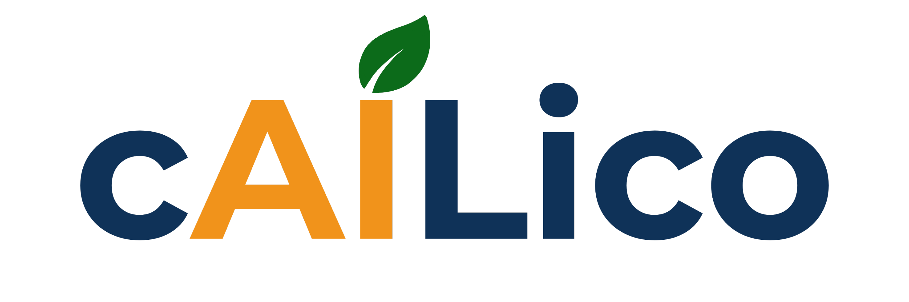

Notas Normi reúne toda la gestión del colegio y una inteligencia artificial que atiende a cada familia por WhatsApp — en una sola plataforma, en español, hecha para las instituciones de Colombia.
Notas, boletines, asistencia, comunicados, permisos, orientación… todo integrado y en tiempo real.
Atiende a cada persona por WhatsApp, 24/7, de forma personalizada.
Una inteligencia artificial que vive en el WhatsApp que las familias ya usan — no hay que instalar ni aprender nada nuevo.
Instituciones reales usándola en su día a día, cada una con su propia configuración, escudo y número de WhatsApp.
Implementar Notas Normi en los colegios públicos de Bogotá los colocaría en una posición tecnológica por encima de la de muchos colegios privados. Sería el primer sistema educativo público del país con una inteligencia artificial atendiendo a cada familia.